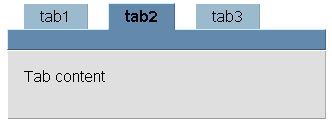
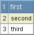
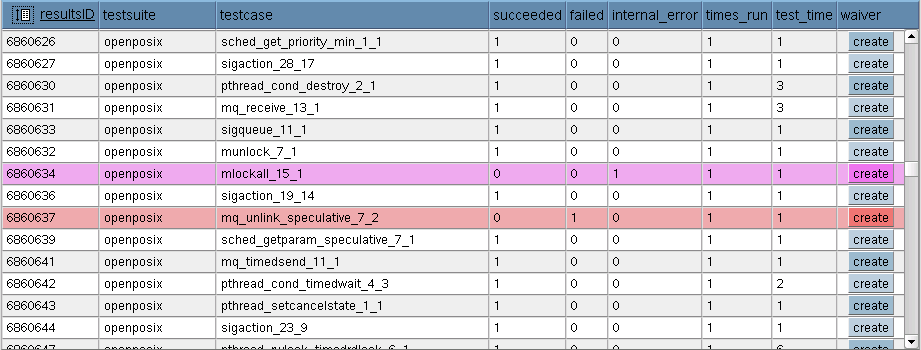
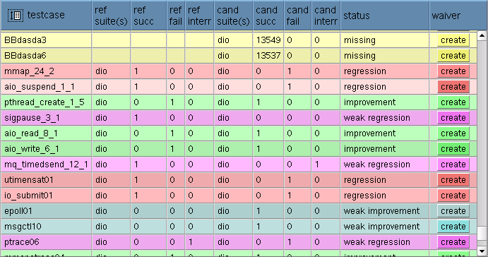
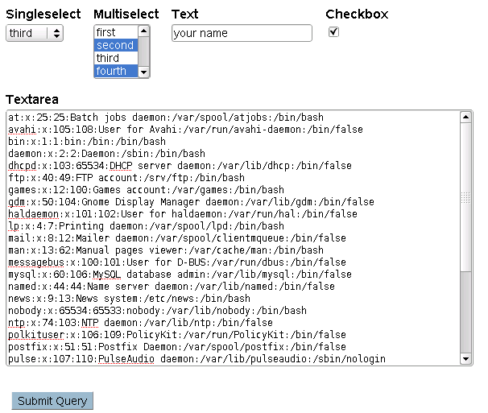

The library was written for a frontend to the main database in the QA departement of SuSE. This means, it can mainly be useful for displaying tables and search forms, or to write database frontends.
The function nav_bar() prints a navigation bar, i.e. a horizontal bar with links.
The function takes a list of pairs of URL and label.
If you specify 'log' in place of a URL, it will be replaced in the following way:
You need to set the global variable $basedir in order to use that feature.
<?php
require_once('../tblib/tblib.php');
print_html_header('test');
$basedir="/qadb";
$glob_dest=array(
array("$basedir/index.php", "Home"),
'log' => array(),
array("$basedir/results.php", "Results"),
array("$basedir/submission.php", "Submissions"),
array("$basedir/regression.php", "Regression Analysis"),
array("$basedir/bench/search.php", 'Benchmarks'),
array(" "," "),
array("$basedir/doc/index.html","API Documentation"));
nav_bar($glob_dest);
?>
</body>
</html>
Following example creates a set of three tabbed cards. The second one is selected ($selected), first two are clickable (have an associated URL).
NOTE: the function print_steps leaves you with an open div (the card body), you need to close it after.
<?php
require_once('../tblib/tblib.php');
print_html_header('test');
$steps=array(
array('tab1','test.php?tab=tab1'),
array('tab2','test.php?tab=tab2'),
array('tab3','')
);
$selected=1;
print_steps($steps,$selected);
echo 'Tab content';
?>
</div>
</body>
</html>

The function print_table($data,$attrs) was made to print 2D database tables.
Of course, you can use it for other tables as well.
This code prints HTML header (to include CSS), defines a small table, and prints it.
<?php
require_once('../tblib/tblib.php');
print_html_header('test');
$data=array(
array(1,'first'),
array(2,'second'),
array(3,'third')
);
print_table($data,array());
?>
</body>
</html>

You can make your table sortable by specifying both its id and sort attributes. The sorting is done entirely on the client site, using JavaScript. Sortable tables longer than 20 rows also have a special icon in their upper left corner. Clicking this icon toggles between full heigth and reduced heigth with scrollbar.
Switching between full heigth and reduced heigth/scrolling only works in Mozilla. If someone knows how to fix the CSS to work in other browsers, please send it to me.
Concatenated types of columns.
| value | type | comment |
|---|---|---|
| i | integer | only the digits at the start work, integers inside the <a> tag don't |
| s | string | common string sorting |
| d | date | common US date format YYYY-MM-DD seems to work on English pages |
| 0 | ignore | this column is not sortable |
The default table class tbl prescribes blue table header and grey table body, slightly different for even and odd rows.
These rows are highlighted, when the user moves the rodent pointer over them. In CSS, it looks like:
.evenrow { background-color:#fff; }
.oddrow { background-color:#eee; }
.evenrow:hover, .oddrow:hover { background-color:#eec; }
In order to highlight let's say the rows with failed cases by another color, define CSS rule for another class. The rows will still be in class evenrow or oddrow, plus in your new class, say failed.
.failed.evenrow { background-color:#fbb; }
.failed.oddrow { background-color:#eaa; }
.failed.evenrow:hover, .failed.oddrow:hover { background-color:#f44; }
Define as many classes as you need.
The easiest way to highlight some lines is writing a callback that assings additional classes to the table rows. The callback should return something appendable to the default class evenrow / oddrow, i.e. either an empty string ( for the default color ), or class (or class list) strarting with a space.
This callback is then passed to the function print_table() in the parameter callback:
...
print_table( $data, array(
'callback'=>'highlight_results',
'id'=>'reslist',
'sort'=>'issiiiiis'
));
...
function highlight_results()
{
$classes='';
$data=func_get_args();
if( $data[5] ) $classes=' internalerr';
if( $data[4] ) $classes=' failed';
return $classes;
}

Sometimes the colorizing needs more data than those available in the callback function. Then you can count the colour before displaying the table, and store it in an invisible table column.
A table had 11 columns, the class was added as the 12th column since row 1. The 11th column does not exist in the table header row, which means it is not displayed (print_table() only prints as many columns as in the table header).
In the colorizing function we just need to return the value:
...
print_table( $data, array(
'callback'=>'colorize'
...
));
...
function colorize()
{
$data=func_get_args();
return $data[12];
}

The function print_search_form can easily print forms that contain following input types:
0. single select
1. multiple select
2. text field
3. textarea
4. checkbox
5. hidden
Specify the input field as:
$what = array( array( $name, $values, $preselect, $type, [ $caption ] ), ... );
$values is only used for selects.
When $caption is omitted, $name is used to print the caption.
<?php
require_once('../tblib/tblib.php');
print_html_header('test');
# data for selects
$data=array(
array(1,'first'),
array(2,'second'),
array(3,'third'),
array(4,'fourth'),
);
# the form definition
$what=array(
array( 'singleselect', $data, 3, 0 ),
array( 'multiselect', $data, array(2,4), 1 ),
array( 'text', '', 'your name', 2),
array( 'checkbox', '', 1, 4 ),
array( 'textarea', '', file_get_contents('/etc/passwd'), 3 ),
array( 'hidden', '', 'daemon', 5 ),
);
# print it
print_search_form( 'test.php', $what );
?>
</body>
</html>

Update tokens can prevent the system to create/delete a row every time the client reloads a request.
$token = token_generate();
Now you have a token generated, you can send it using a form as a hidden variable:
...
$what[]=array('wtoken','',$token,5);
print_search_form('update.php',$what);
On the receiver page, you simply compare the request data with those stored in the session:
if( token_read(http('wtoken')) )
{
# here you can do the update
...
}
else
{
# reloaded request, ignore
}
The function token_generate() generates a new token (number from 1000 to 9999), and stores it in the $_SESSION['token'] array.
Up to 10 tokens can simultaneously exist in the session, so that the user can open multiple tabs in his browser and do multiple simultaneous updates.
The function token_read() simply looks for the token in the session data, and succeeds when found. The found token is removed from the session, so that it cannot be reused.